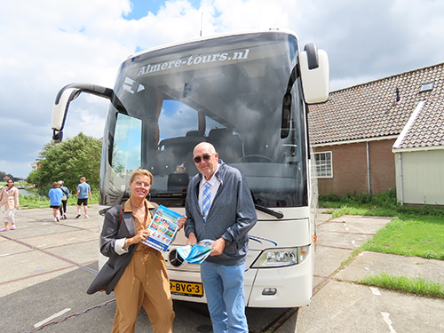

Het idyllische Marken breidt uit met twee moderne werven
Het ‘Convenant Toerisme Marken’ is op maandag 21 maart 2022 ondertekend door een aantal partijen die toeristen naar Marken brengen. Ruim een jaar later, 19 juni 2023, werd een informatiebrochure geïntroduceerd. De vraag is of chauffeurs/gidsen hier ook kennis van hebben kunnen nemen. De werkgroep Toerisme van Stichting Eilandraad Marken zocht het uit.
Aan het begin van de zomervakantie, op zaterdag 15 en zondag 16 juli, zijn zij op het parkeerterrein aanwezig geweest om de folder persoonlijk aan de chauffeurs en gidsen te overhandigen.
Chaffeurs op de hoogte gesteld
Deze werd door de meesten goed ontvangen en waren heel welwillend om zich aan onze regels te houden en de QR code te scannen met een plattegrond met de aanbevolen looproute en de zogenaamde "uitlegplekken" voor gidsen met groepen.
Wel werd duidelijk dat ook een aantal busmaatschappijen Marken bezoekt met gidsen die niet zo welwillend zijn en niet wilden zeggen voor welke organisaties zij werken. De meeste van deze bussen hebben ook geen logo op de bus staan en komen veelal uit Oost-Europese landen. De chauffeurs zijn ook niet op de hoogte dat zij parkeergeld moeten betalen, net zoals alle andere busmaatschappijen zoals bijvoorbeeld Almere Tours dat wel doen.
Al met al een leerzaam weekend voor de werkgroep en zij gaan met alle verzamelde informatie aan de slag om de leefbaarheid met betrekking tot toerisme te verbeteren.